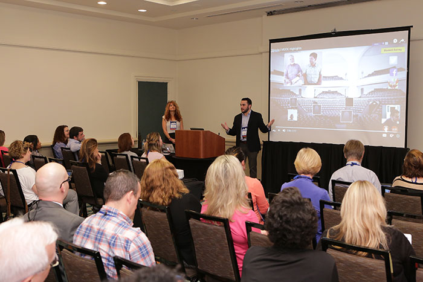
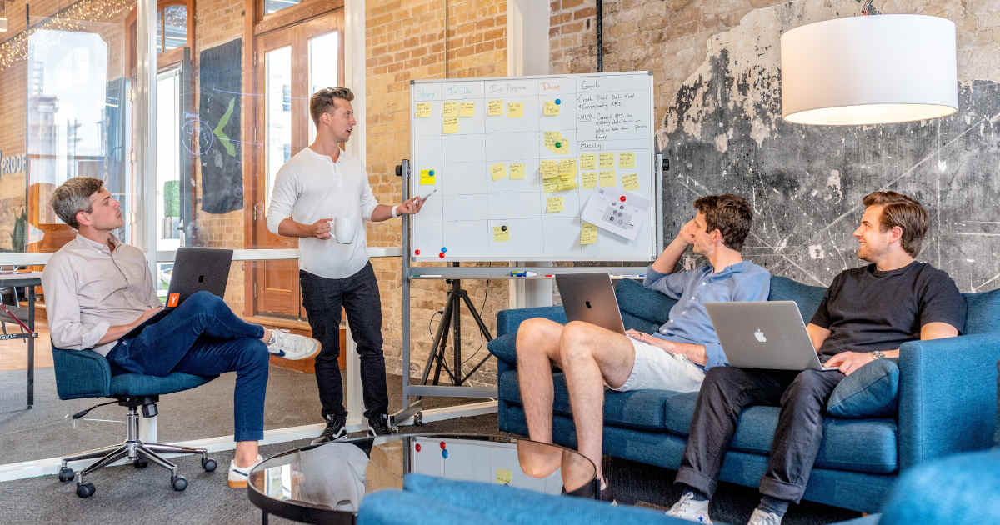

What We Do

Talks

Hackathons

We want to bring together enthusiasts for applied mathematics from the greater Munich area to share, discuss, and collaborate in industrial mathematics, high-performance computing, computational modeling, and numerical analysis. We organize talks by international experts, networking events, workshops, and hackathons. Are you passionate about applied mathematics and want to become part of an open and collaborative community dedicated to advancing knowledge?
Abstract: Dynamic processes have been modelled successfully for centuries, often using differential equations. Using data-driven methods, these processes can now also be inferred directly from measurements. In this talk, Felix will discuss learning differential equations on reduced spaces, utilizing numerical integration schemes to train neural networks for stochastic dynamics, and system identification with the Koopman operator framework.
Abstract: Over the past several decades, the fields of Computational Science and Engineering, Applied Mathematics, and Computer Science have been instrumental in the development of Computer Aided Engineering (CAE) tools. Nowadays, many products undergo virtual testing through simulations during their developmental phases, underlying the remarkable success story of CAE. However, the application of industrial simulation technologies extends beyond this point. Simulation plays a pivotal role in the realization of digital twins and the industrial Metaverse. In this presentation, we will explore the current landscape of Computer Aided Engineering, its progression towards the Digital Twin concept, and its integration into the industrial Metaverse. Additionally, we will emphasize the significance of technological innovation in modeling, simulation, and optimization technologies, with a particular focus on the merging of physics-based and data-driven modeling approaches.
Abstract: Nuclear fusion has the potential to be a major asset for the increasing need for sustainable energy in the future. The talk will focus on magnetic fusion, whose aim is to achieve nuclear fusion by confining a 100 000 000°C hot plasma by a large magnetic field in a toroidal device. An introduction to the main physical models and numerical simulations that are needed for a better understanding of the physics of magnetic fusion will be given, with an emphasis on recent progress in numerical algorithms and the challenges of performance portable physics codes.
Abstract: Artificial intelligence is currently leading to one breakthrough after the other, in industry, public life, and the sciences. However, one current major drawback is the lack of reliability of such methodologies. The goal of this lecture is to first provide an introduction into this new vibrant research area, and also discuss the impact of the EU AI Act and the G7 Hiroshima Process. We will then survey recent advances, in particular, concerning performance guarantees and explainability methods for artificial intelligence, which are key to ensure reliability. Finally, we will discuss fundamental limitations in terms of computability, which seriously affect diverse aspects of reliability, and reveal a surprising connection to novel computing approaches such as neuromorphic computing and quantum computing.
Abstract: Molecular-continuum simulations in fluid dynamics, as subject of my talk, couple computational fluid dynamics (CFD) solvers and molecular dynamics (MD) simulations in a domain decomposition sense. This allows to invest into computationally intensive MD in small-sized local spots, where the molecular behavior requires to be resolved, and to rely on computationally cheap CFD everywhere else. Typically, the MD solver consumes most of the computational time in molecular-continuum simulations. Although this multiscale approach itself renders respective flow simulations significantly cheaper compared to stand-alone MD systems, it can easily still require massive amounts of computational resources. A particular challenge arises from the vast amount of computational resources in exascale systems, that are required to robustly and simultaneously work together. Besides, machine learning and data science methods have evolved as additional scientific research paradigm, extending the computational approach via numerical simulations. In my talk, I discuss massive parallelism in molecular-continuum methods and an approach to making them fault-tolerant against hardware and OS failures on exascale systems. I will further comment on different ways how to make use of the evolving data and machine learning approaches for molecular-continuum systems, such as modeling of artificial boundary forces, noise filtering or learning molecular flow behavior. All developments have been implemented in mature software packages, in particular in the macro-micro-coupling tool MaMiCo for molecular-continuum simulations.
Room: Physik Hörsaal 2
Time: 10:30
Scan the QR code to sign up in the Google Form or send us an email at siam-student-chapter-officers@lists.lrz.de.